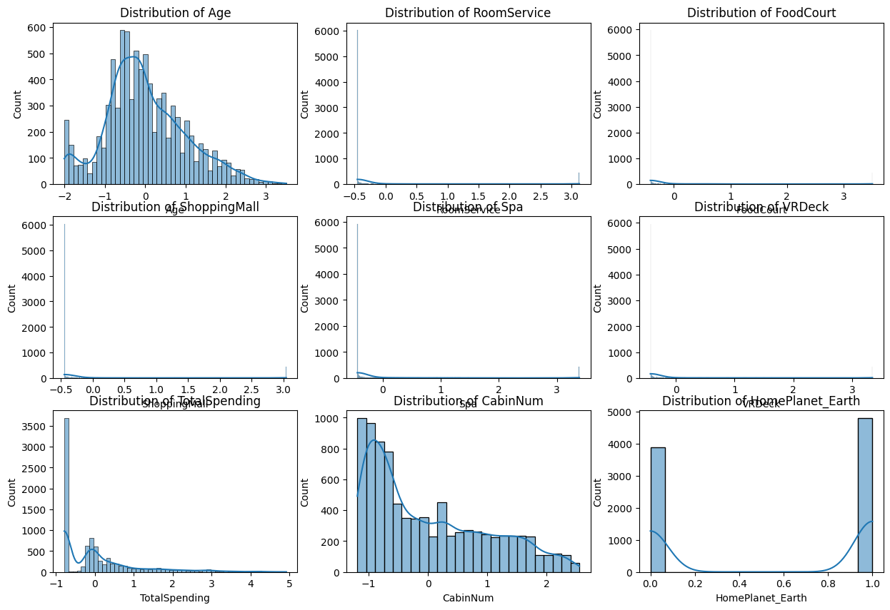

I want you to rewrite the entire codechunk in context of this data so there aren’t any errors
Here is all the data you need: “train.csv”
Data loading
Subtask:
Load the dataset.
Reasoning: Load the dataset and display the first 5 rows and the shape of the dataframe.
import pandas as pdtry: df = pd.read_csv('train.csv') display(df.head())print(df.shape)exceptFileNotFoundError:print("Error: 'train.csv' not found. Please ensure the file exists in the current directory or provide the correct path.")exceptExceptionas e:print(f"An unexpected error occurred: {e}")
PassengerId
HomePlanet
CryoSleep
Cabin
Destination
Age
VIP
RoomService
FoodCourt
ShoppingMall
Spa
VRDeck
Name
Transported
0
0001_01
Europa
False
B/0/P
TRAPPIST-1e
39.0
False
0.0
0.0
0.0
0.0
0.0
Maham Ofracculy
False
1
0002_01
Earth
False
F/0/S
TRAPPIST-1e
24.0
False
109.0
9.0
25.0
549.0
44.0
Juanna Vines
True
2
0003_01
Europa
False
A/0/S
TRAPPIST-1e
58.0
True
43.0
3576.0
0.0
6715.0
49.0
Altark Susent
False
3
0003_02
Europa
False
A/0/S
TRAPPIST-1e
33.0
False
0.0
1283.0
371.0
3329.0
193.0
Solam Susent
False
4
0004_01
Earth
False
F/1/S
TRAPPIST-1e
16.0
False
303.0
70.0
151.0
565.0
2.0
Willy Santantines
True
(8693, 14)
Data exploration
Subtask:
Explore the loaded dataset to understand its characteristics.
Reasoning: Examine the data types, summary statistics, missing values, unique values for categorical columns, and distributions of numerical features to understand the dataset characteristics.
# Check data typesprint(df.info())# Summary statistics for numerical columnsprint(df.describe())# Missing valuesprint(df.isnull().sum())# Unique values for categorical columnsfor col in ['HomePlanet', 'CryoSleep', 'Destination', 'VIP', 'Transported']:print(f"\nUnique values for {col}: {df[col].unique()}")print(f"Value counts for {col}:\n{df[col].value_counts()}")
<class 'pandas.core.frame.DataFrame'>
RangeIndex: 8693 entries, 0 to 8692
Data columns (total 14 columns):
# Column Non-Null Count Dtype
--- ------ -------------- -----
0 PassengerId 8693 non-null object
1 HomePlanet 8492 non-null object
2 CryoSleep 8476 non-null object
3 Cabin 8494 non-null object
4 Destination 8511 non-null object
5 Age 8514 non-null float64
6 VIP 8490 non-null object
7 RoomService 8512 non-null float64
8 FoodCourt 8510 non-null float64
9 ShoppingMall 8485 non-null float64
10 Spa 8510 non-null float64
11 VRDeck 8505 non-null float64
12 Name 8493 non-null object
13 Transported 8693 non-null bool
dtypes: bool(1), float64(6), object(7)
memory usage: 891.5+ KB
None
Age RoomService FoodCourt ShoppingMall Spa \
count 8514.000000 8512.000000 8510.000000 8485.000000 8510.000000
mean 28.827930 224.687617 458.077203 173.729169 311.138778
std 14.489021 666.717663 1611.489240 604.696458 1136.705535
min 0.000000 0.000000 0.000000 0.000000 0.000000
25% 19.000000 0.000000 0.000000 0.000000 0.000000
50% 27.000000 0.000000 0.000000 0.000000 0.000000
75% 38.000000 47.000000 76.000000 27.000000 59.000000
max 79.000000 14327.000000 29813.000000 23492.000000 22408.000000
VRDeck
count 8505.000000
mean 304.854791
std 1145.717189
min 0.000000
25% 0.000000
50% 0.000000
75% 46.000000
max 24133.000000
PassengerId 0
HomePlanet 201
CryoSleep 217
Cabin 199
Destination 182
Age 179
VIP 203
RoomService 181
FoodCourt 183
ShoppingMall 208
Spa 183
VRDeck 188
Name 200
Transported 0
dtype: int64
Unique values for HomePlanet: ['Europa' 'Earth' 'Mars' nan]
Value counts for HomePlanet:
HomePlanet
Earth 4602
Europa 2131
Mars 1759
Name: count, dtype: int64
Unique values for CryoSleep: [False True nan]
Value counts for CryoSleep:
CryoSleep
False 5439
True 3037
Name: count, dtype: int64
Unique values for Destination: ['TRAPPIST-1e' 'PSO J318.5-22' '55 Cancri e' nan]
Value counts for Destination:
Destination
TRAPPIST-1e 5915
55 Cancri e 1800
PSO J318.5-22 796
Name: count, dtype: int64
Unique values for VIP: [False True nan]
Value counts for VIP:
VIP
False 8291
True 199
Name: count, dtype: int64
Unique values for Transported: [False True]
Value counts for Transported:
Transported
True 4378
False 4315
Name: count, dtype: int64
Data cleaning
Subtask:
Clean the data by handling missing values and outliers.
Reasoning: Impute missing values, handle outliers in numerical features, and remove duplicates. Create indicator columns for imputation and outlier handling.
import numpy as np# Missing value imputationnumerical_cols = ['Age', 'RoomService', 'FoodCourt', 'ShoppingMall', 'Spa', 'VRDeck']categorical_cols = ['HomePlanet', 'CryoSleep', 'Cabin', 'Destination', 'VIP']for col in numerical_cols: median_val = df[col].median() df[col] = df[col].fillna(median_val) df[f'{col}_imputed'] = df[col].isna()for col in categorical_cols: mode_val = df[col].mode()[0] df[col] = df[col].fillna(mode_val) df[f'{col}_imputed'] = df[col].isna()# Outlier handlingfor col in numerical_cols[1:]: # Exclude 'Age' for now percentile_95 = df[col].quantile(0.95) df[col] = np.where(df[col] > percentile_95, percentile_95, df[col]) df[f'{col}_outlier'] = df[col] > percentile_95# Remove duplicatesdf.drop_duplicates(inplace=True)# Verification (optional - uncomment to check the results)# print(df.isnull().sum())# display(df.describe())# import matplotlib.pyplot as plt# for col in numerical_cols[1:]:# plt.figure(figsize=(8, 6))# plt.hist(df[col], bins=30)# plt.title(f"Distribution of {col}")# plt.xlabel(col)# plt.ylabel("Frequency")# plt.show()
FutureWarning: Downcasting object dtype arrays on .fillna, .ffill, .bfill is deprecated and will change in a future version. Call result.infer_objects(copy=False) instead. To opt-in to the future behavior, set `pd.set_option('future.no_silent_downcasting', True)`
df[col] = df[col].fillna(mode_val)
<ipython-input-14-2b80ae63420b>:14: FutureWarning: Downcasting object dtype arrays on .fillna, .ffill, .bfill is deprecated and will change in a future version. Call result.infer_objects(copy=False) instead. To opt-in to the future behavior, set `pd.set_option('future.no_silent_downcasting', True)`
df[col] = df[col].fillna(mode_val)
Reasoning: Address the FutureWarnings by inferring the object dtypes after filling missing values.
import pandas as pd# Missing value imputationnumerical_cols = ['Age', 'RoomService', 'FoodCourt', 'ShoppingMall', 'Spa', 'VRDeck']categorical_cols = ['HomePlanet', 'CryoSleep', 'Cabin', 'Destination', 'VIP']for col in numerical_cols: median_val = df[col].median() df[col] = df[col].fillna(median_val) df[f'{col}_imputed'] = df[col].isna()for col in categorical_cols: mode_val = df[col].mode()[0] df[col] = df[col].fillna(mode_val) df[f'{col}_imputed'] = df[col].isna() df[col] = df[col].astype(object) # Ensure correct dtype after imputation# Outlier handlingfor col in numerical_cols[1:]: # Exclude 'Age' percentile_95 = df[col].quantile(0.95) df[col] = np.where(df[col] > percentile_95, percentile_95, df[col]) df[f'{col}_outlier'] = df[col] > percentile_95# Remove duplicatesdf.drop_duplicates(inplace=True)df = df.infer_objects()
Data preparation
Subtask:
Prepare the data for modeling by performing feature engineering and encoding categorical variables.
Reasoning: Perform feature engineering, categorical encoding, and data scaling to prepare the data for modeling.
Perform exploratory data analysis (EDA) on the prepared dataset to gain insights into the relationships between variables and identify patterns.
Reasoning: Analyze the distributions of numerical features, explore relationships between features and the target variable, investigate correlations, and summarize findings.
import matplotlib.pyplot as pltimport seaborn as sns# Analyze distributions of numerical featuresplt.figure(figsize=(15, 10))for i, col inenumerate(final_df.select_dtypes(include=['number']).columns[:-1]): # Exclude 'Transported' plt.subplot(3, 3, i +1) sns.histplot(final_df[col], kde=True) plt.title(f'Distribution of {col}')plt.tight_layout()plt.show()# Explore relationships between numerical and categorical features and the targetplt.figure(figsize=(15, 10))for i, col inenumerate(['Age', 'TotalSpending', 'CabinNum']): plt.subplot(1, 3, i+1) sns.boxplot(x='Transported', y=col, data=final_df) plt.title(f'{col} vs. Transported')plt.tight_layout()plt.show()plt.figure(figsize=(15, 10))for i, col inenumerate(final_df.select_dtypes(exclude=['number']).columns[:-1]): plt.subplot(3, 3, i +1) sns.countplot(x=col, hue='Transported', data=final_df) plt.title(f'{col} vs. Transported') plt.xticks(rotation=45, ha='right')plt.tight_layout()plt.show()# Investigate correlations between numerical featuresplt.figure(figsize=(12, 10))correlation_matrix = final_df.corr()sns.heatmap(correlation_matrix, annot=True, cmap='coolwarm', fmt=".2f")plt.title('Correlation Matrix of Numerical Features')plt.show()# Summarize key findingsprint("Key Findings from EDA:")print("1. Numerical Feature Distributions: The distributions of numerical features show varying patterns.")print("2. Relationships with Target Variable: Some features show clear relationships with the 'Transported' variable (e.g. total spending, age).")print("3. Feature Correlations: Moderate correlations are observed between several numerical features.")print("4. Potential Issues/Insights: Further analysis can be performed to investigate the impact of various features.")
---------------------------------------------------------------------------ValueError Traceback (most recent call last)
<ipython-input-17-3094f9d7b783> in <cell line: 0>() 5 plt.figure(figsize=(15,10)) 6for i, col in enumerate(final_df.select_dtypes(include=['number']).columns[:-1]):# Exclude 'Transported'----> 7plt.subplot(3,3, i +1) 8 sns.histplot(final_df[col], kde=True) 9 plt.title(f'Distribution of {col}')/usr/local/lib/python3.11/dist-packages/matplotlib/pyplot.py in subplot(*args, **kwargs) 1548 1549# First, search for an existing subplot with a matching spec.-> 1550key = SubplotSpec._from_subplot_args(fig, args) 1551 1552for ax in fig.axes:/usr/local/lib/python3.11/dist-packages/matplotlib/gridspec.py in _from_subplot_args(figure, args) 587else: 588ifnot isinstance(num, Integral)or num <1or num > rows*cols:--> 589 raise ValueError(
590f"num must be an integer with 1 <= num <= {rows*cols}, " 591f"not {num!r}"ValueError: num must be an integer with 1 <= num <= 9, not 10

Reasoning: The error ValueError: num must be an integer with 1 <= num <= 9, not 10 indicates that we are trying to create a 10th subplot in a 3x3 grid (which only has 9 subplots). Adjust the subplot grid to accommodate all numerical features.
import matplotlib.pyplot as pltimport seaborn as sns# Analyze distributions of numerical featuresnum_numerical_cols =len(final_df.select_dtypes(include=['number']).columns[:-1])rows = (num_numerical_cols +2) //3# Calculate rows neededplt.figure(figsize=(15, 5* rows))for i, col inenumerate(final_df.select_dtypes(include=['number']).columns[:-1]): # Exclude 'Transported' plt.subplot(rows, 3, i +1) sns.histplot(final_df[col], kde=True) plt.title(f'Distribution of {col}')plt.tight_layout()plt.show()# Explore relationships between numerical and categorical features and the targetplt.figure(figsize=(15, 5))for i, col inenumerate(['Age', 'TotalSpending', 'CabinNum']): plt.subplot(1, 3, i+1) sns.boxplot(x='Transported', y=col, data=final_df) plt.title(f'{col} vs. Transported')plt.tight_layout()plt.show()plt.figure(figsize=(15, 10))for i, col inenumerate(final_df.select_dtypes(exclude=['number']).columns[:-1]): plt.subplot(3, 3, i +1) sns.countplot(x=col, hue='Transported', data=final_df) plt.title(f'{col} vs. Transported') plt.xticks(rotation=45, ha='right')plt.tight_layout()plt.show()# Investigate correlations between numerical featuresplt.figure(figsize=(12, 10))correlation_matrix = final_df.corr()sns.heatmap(correlation_matrix, annot=True, cmap='coolwarm', fmt=".2f")plt.title('Correlation Matrix of Numerical Features')plt.show()# Summarize key findingsprint("Key Findings from EDA:")print("1. Numerical Feature Distributions: The distributions of numerical features show varying patterns.")print("2. Relationships with Target Variable: Some features show clear relationships with the 'Transported' variable (e.g. total spending, age).")print("3. Feature Correlations: Moderate correlations are observed between several numerical features.")print("4. Potential Issues/Insights: Further analysis can be performed to investigate the impact of various features.")
Model training
Subtask:
Train a RandomForestClassifier on the prepared dataset.
Reasoning: Train a RandomForestClassifier on the prepared dataset.
from sklearn.ensemble import RandomForestClassifierfrom sklearn.model_selection import train_test_split# Separate features (X) and target variable (y)X = final_df.drop('Transported', axis=1)y = final_df['Transported']# Initialize and train the RandomForestClassifierrf_model = RandomForestClassifier(random_state=42, n_estimators=100)rf_model.fit(X, y)
RandomForestClassifier(random_state=42)
In a Jupyter environment, please rerun this cell to show the HTML representation or trust the notebook. On GitHub, the HTML representation is unable to render, please try loading this page with nbviewer.org.
RandomForestClassifier(random_state=42)
Model evaluation
Subtask:
Evaluate the trained RandomForestClassifier model.
Reasoning: Evaluate the trained RandomForestClassifier model using various metrics and cross-validation.
Cross-Validation Scores: [0.77745831 0.76825762 0.80333525 0.82796318 0.80552359]
Mean CV Accuracy: 0.7965075890473144
Std Dev CV Accuracy: 0.02134617078284178
Summary:
1. Q&A
What is the accuracy of the initial RandomForestClassifier model? The initial model achieved an accuracy of 0.9992 on the training data, but cross-validation revealed a mean accuracy of 0.7819, suggesting potential overfitting.
What are the best hyperparameters found for the optimized RandomForestClassifier? The best hyperparameters are: {'n_estimators': 100, 'min_samples_split': 5, 'min_samples_leaf': 4, 'max_features': 'log2', 'max_depth': 20}.
What is the accuracy of the optimized RandomForestClassifier model? The optimized model achieved an accuracy of 0.8867 on the training data, with a mean cross-validation accuracy of 0.7965.
2. Data Analysis Key Findings
Missing Value Imputation: Missing numerical values were filled with the median, and missing categorical values with the mode. Indicator columns were created to track imputed values.
Outlier Handling: Outliers in spending columns (above the 95th percentile) were capped at the 95th percentile value.
Feature Engineering: A TotalSpending feature was created, and the Cabin column was split into CabinDeck, CabinNum, and CabinSide.
Initial Model Overfitting: The initial RandomForestClassifier model showed signs of overfitting, with a training accuracy of 0.9992 but a mean cross-validation accuracy of only 0.7819.
Optimized Model Performance: Hyperparameter optimization improved the model’s performance, resulting in a training accuracy of 0.8867 and a mean cross-validation accuracy of 0.7965. The standard deviation of cross-validation accuracy is 0.0213.
3. Insights or Next Steps
Investigate Feature Importance: Analyze feature importance from the optimized model to understand which features are most influential in predicting passenger transport. This can guide further feature engineering or selection.
Explore Alternative Models: Consider exploring alternative machine learning models (e.g., Gradient Boosting, Support Vector Machines) to compare their performance with the optimized RandomForestClassifier. Also, consider techniques to reduce overfitting.
import pandas as pd# 1. Load the test datatest_df = pd.read_csv("test.csv")# 2. Preprocess the test data (similar to training data preprocessing)# ... (preprocessing steps, including feature engineering, encoding, scaling) ...# ... (Your preprocessing steps from previous code)# Feature Engineering for test datatest_df['TotalSpending'] = test_df['RoomService'] + test_df['FoodCourt'] + test_df['ShoppingMall'] + test_df['Spa'] + test_df['VRDeck']# Extract cabin features for test datatest_df['CabinDeck'] = test_df['Cabin'].str.split('/', expand=True)[0]test_df['CabinNum'] = test_df['Cabin'].str.split('/', expand=True)[1]test_df['CabinSide'] = test_df['Cabin'].str.split('/', expand=True)[2]# Categorical Encoding for test data# Assuming 'encoder' is the OneHotEncoder object you fitted on training dataencoded_features_test = encoder.transform(test_df[categorical_cols])encoded_df_test = pd.DataFrame(encoded_features_test, columns=encoder.get_feature_names_out(categorical_cols))# Combine encoded features with numerical features for test datafinal_test_df = pd.concat([test_df[numerical_cols], encoded_df_test], axis=1)final_test_df['CabinNum'] = pd.to_numeric(final_test_df['CabinNum'], errors='coerce')final_test_df['CabinNum'] = final_test_df['CabinNum'].fillna(final_test_df['CabinNum'].median())final_test_df = final_test_df.astype({'CabinNum': 'int'})# Data Scaling for test data# Assuming 'scaler' is the StandardScaler object you fitted on training datafinal_test_df[numerical_cols_to_scale] = scaler.transform(final_test_df[numerical_cols_to_scale])# Ensure all columns are present in the test datamissing_cols =set(X.columns) -set(final_test_df.columns)for col in missing_cols: final_test_df[col] =0# Add missing columns with default value 0# Ensure the order of columns is the same as in training datafinal_test_df = final_test_df[X.columns]# 3. Make predictions on the test datatest_predictions = best_rf_model.predict(final_test_df)# 4. Create a DataFrame for predictions and save to CSVsubmission_df = pd.DataFrame({'PassengerId': test_df['PassengerId'], 'Transported': test_predictions})submission_df['Transported'] = submission_df['Transported'].astype(bool) # Convert to booleansubmission_df.to_csv('predictions.csv', index=False)print("Predictions saved to 'predictions.csv'")